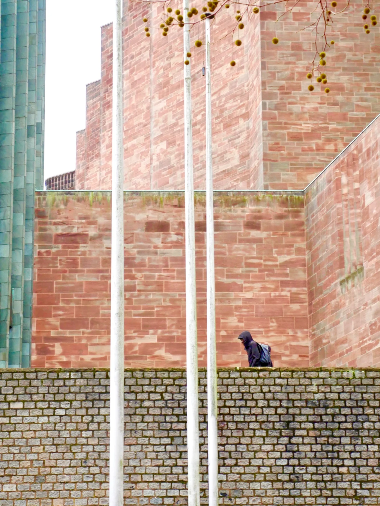
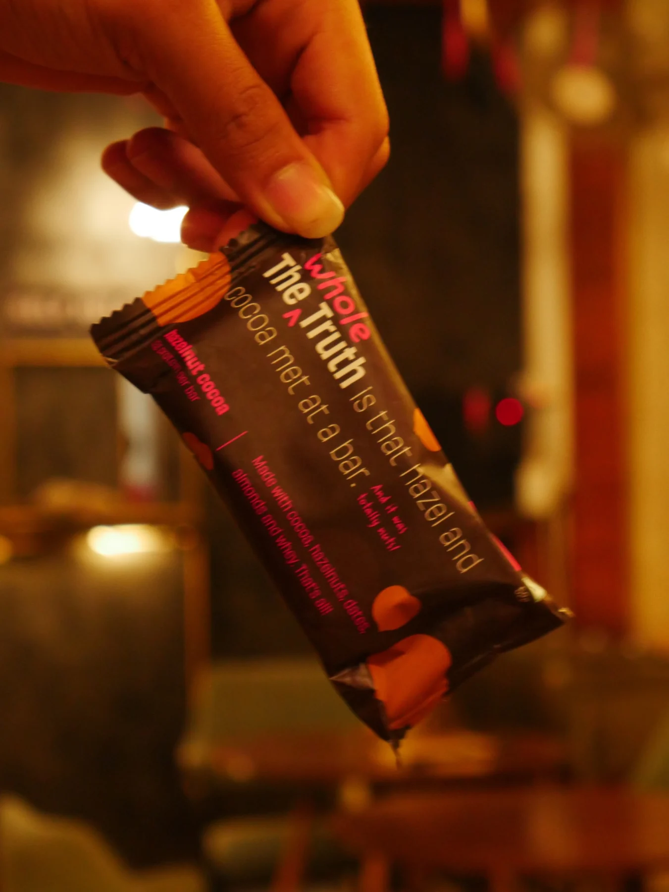
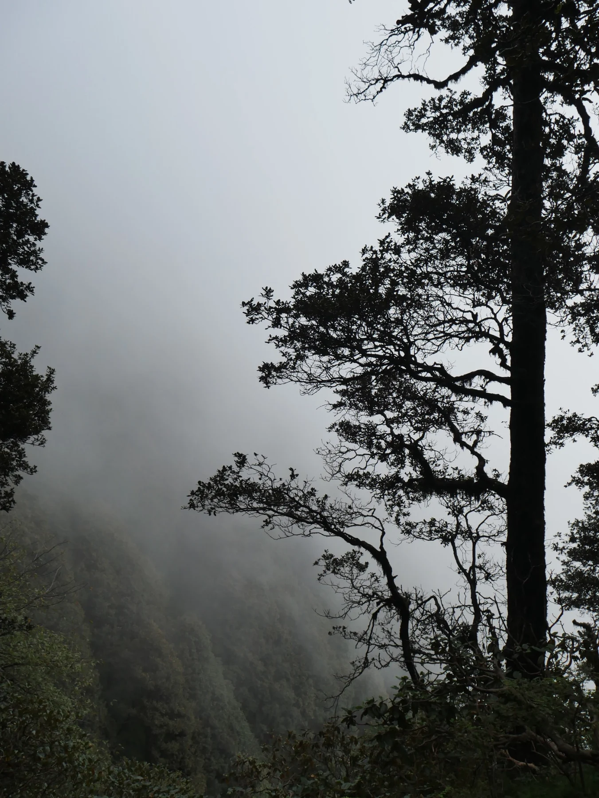
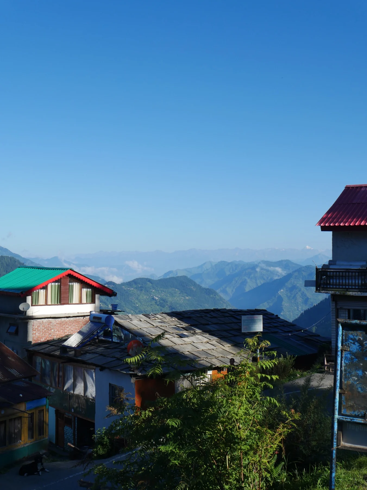
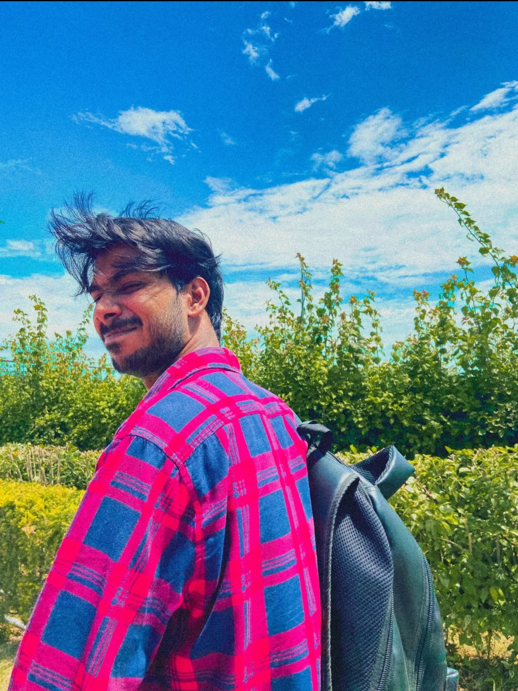
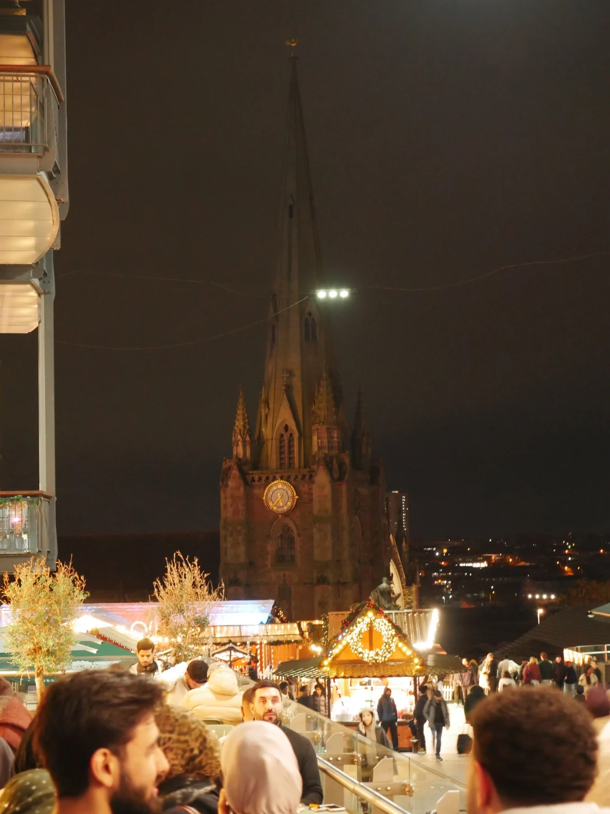

PHOTOGRAPHY / PRODUCT
Food & product photography
Light · Texture · Detail
A hands-on creative for a creator-led world — developing hooks, filming, editing and helping ideas become content people want to watch.
↓
01 / FILM▶MOTION
02 / PHOTO✳LIGHTI’m interested in the moment that makes someone stop scrolling. The opening frame, the feeling, the detail — and the story that follows.
Creator content · Short-form video
Creator content · Short-form video
Creator support · Channel setup
Creator support · Profile setup
Personal work · Reels and creative pacing
Light · Texture · Detail




Street · Travel · Portraits · Architecture
I’m Ankush, a London-based creative working across photography, videography and social content. I enjoy the whole process: finding the idea, writing the hook, planning the shots, filming, and shaping the edit until it feels right. I’m especially interested in supporting creator-led production, where quick thinking, strong visual instincts and reliable hands-on help matter.
I bring a visual mindset, a hands-on approach and an interest in how people connect with stories across digital platforms. I’m keen to collaborate with creators, brands and teams who care about making thoughtful, engaging work.
Flexible creative support for projects that need both ideas and execution.
Reels, Shorts, hooks, pacing and platform-native storytelling.
↗Camera and smartphone capture, composition, B-roll and behind-the-scenes footage.
↗Turning raw footage into a clear, engaging visual narrative.
↗Brainstorming, location ideas, shoot-day assistance, trend research and keeping content moving from plan to post.
↗OPEN TO CREATOR ASSISTANT OPPORTUNITIES